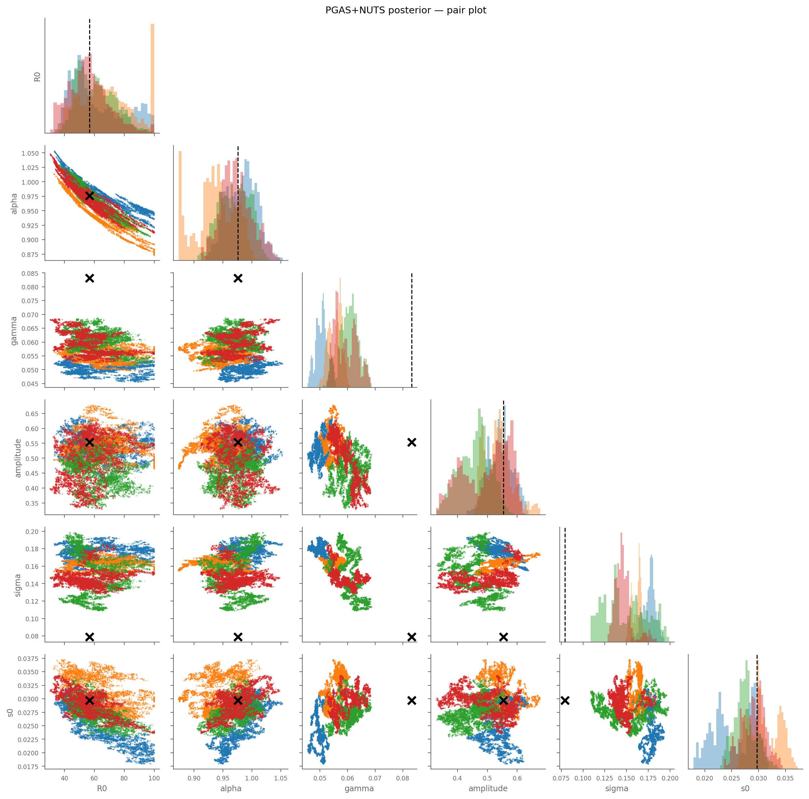
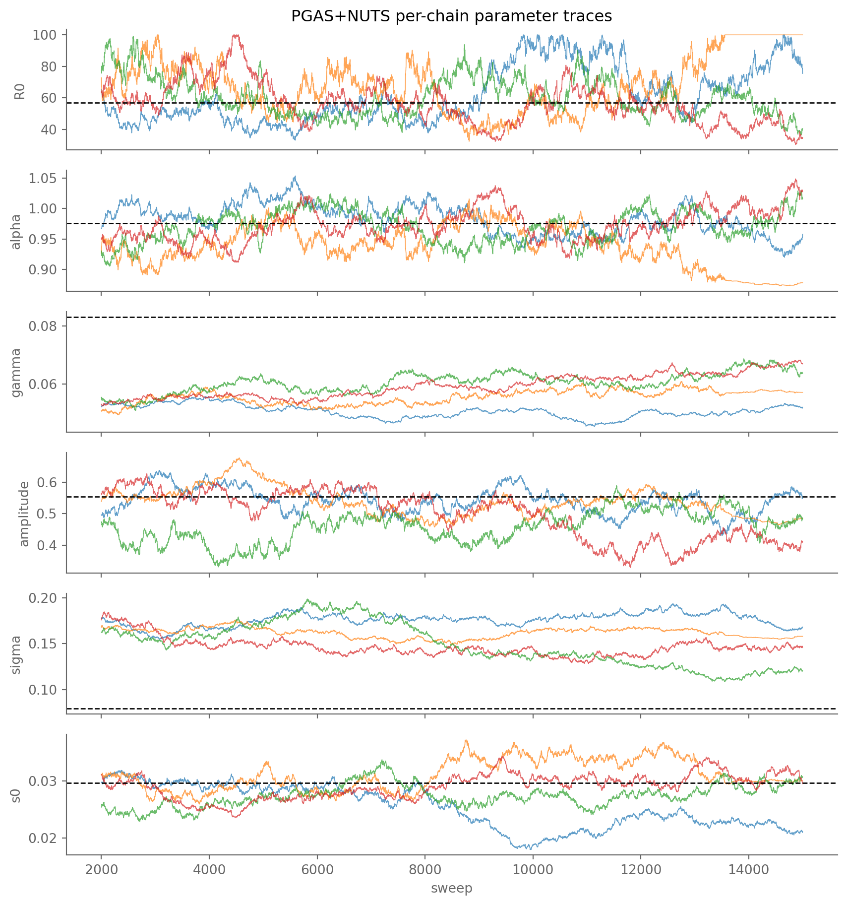

PGAS+NUTS convergence diagnostics (4 chains)
per-chain NUTS acceptance: [0.64, 0.55, 0.8, 0.66]
param Rhat ESS status
R0 1.053 34.6 ~
alpha 1.230 — ✗
amplitude 1.225 — ✗
gamma 1.755 — ✗
s0 1.329 — ✗
sigma 1.407 — ✗
best complete-data ll: -30562.0 (chain 1)
acceptance rate (mean across chains): 61.6%Measles Bayesian: PGAS+NUTS posterior on the synthetic data
What posterior inference looks like when the likelihood has a 4-parameter ridge
The synthetic-recovery chapter showed the He et al. (2010) measles likelihood has a 4-parameter ridge in \((R_0, \gamma, s_0, \alpha)\). MLE methods (IF2 + profile) gave us the ridge geometry; this chapter does the Bayesian posterior with weakly informative priors that break the ridge enough to produce a coherent posterior.
PMMH is a non-starter at \(T = 1096\) observations (PF log-lik variance scales linearly with \(T\); acceptance collapses below 1%). The viable path is PGAS with NUTS for the parameter step — PGAS’s CSMC trajectory step decouples parameter sampling from PF noise, and NUTS handles the ridge-correlated parameters far better than random-walk MH.
Convergence: Rhat + ESS
WarningOn the Rhat numbers and what they mean here
Rhat ≥ 1.10 means chains haven’t mixed: across-chain variance in the posterior is larger than within-chain variance. We’re at Rhat = 1.05–1.76 across the 6 parameters for the 5-yr fit, and much worse for the 21-yr stretch test.
The structural reason — same as in the synthetic chapter — is the 4-parameter \((R_0, \gamma, s_0, \alpha)\) FOI ridge. Likelihood-only inference is non-identifiable along the ridge; only the priors break it. The priors here are moderately informative (1990s measles-modeling subject-matter knowledge) but not informative enough to fully constrain ridge-aligned drift across chains in this many sweeps.
ESS is shown as — for parameters with Rhat ≫ 1.10: it’s mathematically defined but not interpretable when chains haven’t mixed. R₀ has Rhat ≈ 1.05 and ESS ≈ 35 (low but real).
camdl flags acceptance rates 64–80% as “outside healthy range [15%, 50%]” but those bounds apply to random-walk Metropolis–Hastings; NUTS targets 65–90%, so the observed rates are healthy for NUTS specifically. That’s a wording bug in camdl’s diagnostic warning, not a real issue with this fit.
NoteUpstream gap:
camdl fit summary doesn’t show PGAS stages
camdl fit summary <fit_dir> (added in camdl#18) only emits the scout / refine / validate sections. PGAS / PMMH stages are silently dropped — even though they produce rich diagnostics (Rhat, ESS, acceptance rates, per-chain log-likelihood) that the summary command would naturally cover. We hand-parse pgas/pgas_summary.json here as a workaround. Worth filing upstream as a Phase-N follow-up to the summary command.
Posterior pair plot
show code
BURN_IN = 2000 # matches fit_bayesian_5yr.toml [stages.pgas].burn_in
def load_pgas_samples(pgas_dir, burn_in=BURN_IN):
"""Load post-burn-in samples from per-chain trace.tsv files."""
dfs = []
for cd in sorted((Path(pgas_dir)).glob("chain_*"),
key=lambda p: int(p.name.split("_")[1])):
cid = int(cd.name.split("_")[1])
sf = cd / "trace.tsv"
if not sf.exists():
continue
df = pl.read_csv(sf, separator="\t", comment_prefix="#",
infer_schema_length=10000)
if "sweep" in df.columns:
df = df.filter(pl.col("sweep") >= burn_in)
dfs.append(df.with_columns(pl.lit(cid).alias("chain")))
return pl.concat(dfs) if dfs else None
if PGAS_DIR is not None and PGAS_DIR.exists():
samples = load_pgas_samples(PGAS_DIR)
if samples is not None:
chain_ids = sorted(samples["chain"].unique().to_list())
colors = chain_color_palette(chain_ids)
n = len(PARAMS)
fig, axes = plt.subplots(n, n, figsize=(2*n+1, 2*n+1))
for i, p_y in enumerate(PARAMS):
for j, p_x in enumerate(PARAMS):
ax = axes[i, j]
if i == j:
for c in chain_ids:
sub = samples.filter(pl.col("chain") == c)
ax.hist(sub[p_y].to_numpy(), bins=30,
color=colors[c], alpha=0.4,
edgecolor="none")
if p_y in TRUTH:
ax.axvline(TRUTH[p_y], color="black",
linestyle="--", linewidth=1.2)
ax.set_yticks([])
elif i > j:
for c in chain_ids:
sub = samples.filter(pl.col("chain") == c)
ax.scatter(sub[p_x], sub[p_y],
color=colors[c], s=2, alpha=0.3,
edgecolor="none")
if p_x in TRUTH and p_y in TRUTH:
ax.scatter([TRUTH[p_x]], [TRUTH[p_y]],
marker="x", color="black", s=80,
linewidth=2.5, zorder=10)
else:
ax.set_visible(False)
if i == n-1: ax.set_xlabel(p_x, fontsize=9)
else: ax.set_xticklabels([])
if j == 0: ax.set_ylabel(p_y, fontsize=9)
else: ax.set_yticklabels([])
ax.tick_params(labelsize=7)
fig.suptitle("PGAS+NUTS posterior — pair plot", fontsize=11)
fig.tight_layout()
else:
print("PGAS posterior not yet present.")
print("Run: cd vignettes/he2010-bayesian && make pgas")
Trace plots
show code
if PGAS_DIR is not None and PGAS_DIR.exists() and samples is not None:
fig, axes = plt.subplots(len(PARAMS), 1, figsize=(9, 1.6*len(PARAMS)),
sharex=True)
for ax, p in zip(axes, PARAMS):
for c in chain_ids:
sub = samples.filter(pl.col("chain") == c).sort("sweep") \
if "sweep" in samples.columns else samples.filter(pl.col("chain") == c)
x = sub["sweep"] if "sweep" in samples.columns else np.arange(sub.height)
ax.plot(x, sub[p].to_numpy(), color=colors[c],
linewidth=0.6, alpha=0.7)
if p in TRUTH:
ax.axhline(TRUTH[p], color="black", linestyle="--",
linewidth=1, label="truth")
ax.set_ylabel(p, fontsize=10)
axes[-1].set_xlabel("sweep")
axes[0].set_title("PGAS+NUTS per-chain parameter traces")
fig.tight_layout()
Posterior summary
param truth mean sd q025 q975
R0 56.8 62.02 16.13 37.84 100
alpha 0.976 0.9657 0.03303 0.881 1.023
gamma 0.0832 0.05657 0.004954 0.04751 0.06649
amplitude 0.554 0.5085 0.06508 0.3682 0.6148
sigma 0.0791 0.1582 0.01814 0.1184 0.1879
s0 0.0297 0.02826 0.003476 0.02039 0.03492